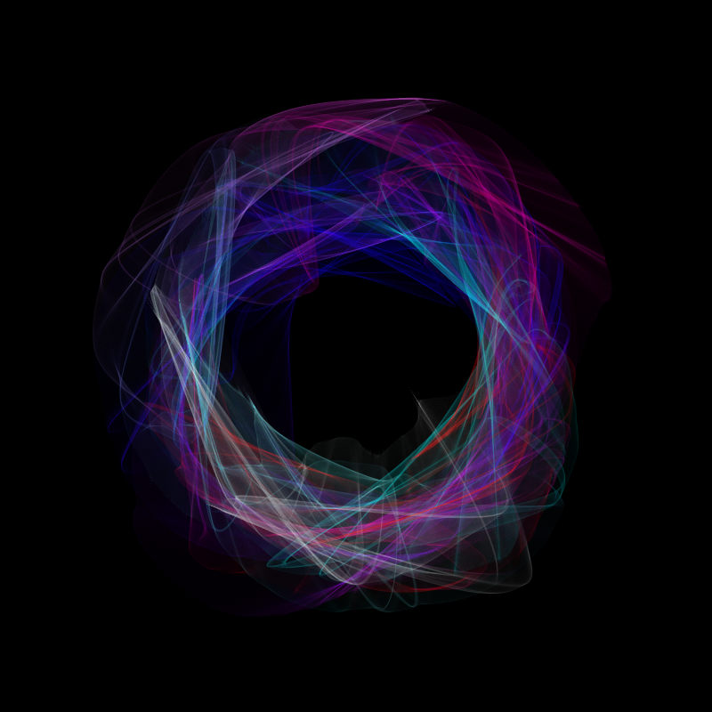
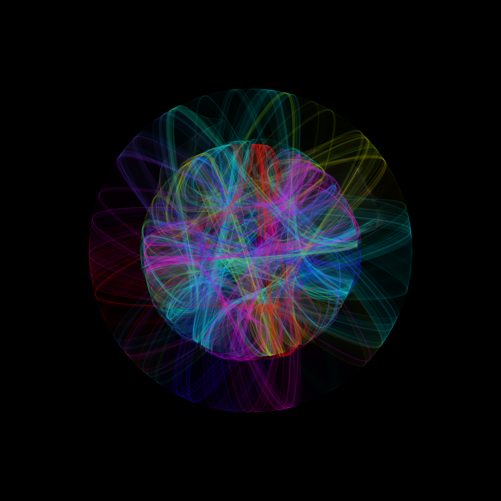
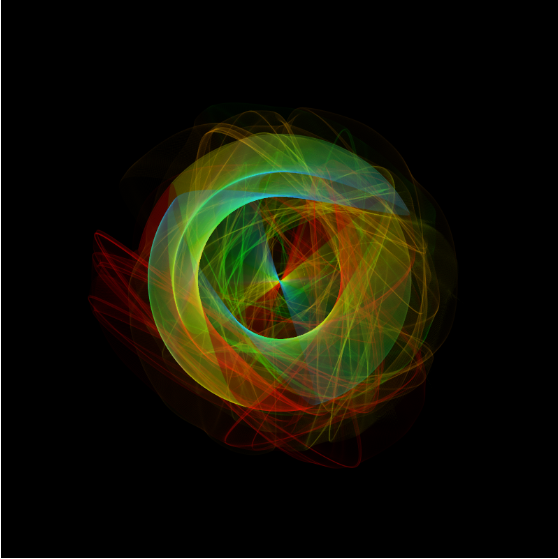
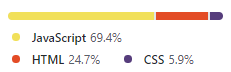

Lygobate Interactive Random Art-Generator
(LIRAG)
par Lygobate (Axel.A)
Sommaire
Présentation et Utilisation de LIRAG
Le random art generator est une plateforme permettant de générer des œuvres d’art randomisées grâce à du processing JS.
Le programme se base sur une mécanique simple et classique dite “d’horloge”, c'est-à-dire avec la rotation d’un élément qui vient dessiner sur le canevas.
Cette mécanique est appliquée ici, sur une forme randomisée créée par ensemble de curveVertex, dont la morphologie et ses déplacements évoluent grâce à un bruit mathématique “naturel” (bruit de Perlin) qui vient perturber les coordonnées mathématique de notre forme.
L’interaction utilisateur se fait uniquement via le projet en lui-même : Pas besoin de modifier quoi que ce soit dans les entrailles du code.
Une interface a été créée afin de permettre à l’utilisateur de modifier des paramètres, qui influenceront le rendu de la génération.
Exemples de générations

Accéder au projet
Pour accéder au projet, il vous suffira de vous rendre (via n’importe quel navigateur) sur ce lien : https://lygobate.github.io/
Architecture et fonctionnement du script
Presets
Déclaration des variables liées au boutons et aux inputs gérés par l’utilisateur
Jquery pour dynamiser les boutons HTML et faire le lien entre HTML/JS (entre affichage/saisie/variables du script)
Déclaration des variables/constantes nécessaires au script
Initialisation (fonction setup)
Création du canvas et paramètres associés
Générations de 30 coordonnées (angle + rayon) des points et des clés de randomisations
Fonctions
createPoints(nb) : génération des amplitudes de bruits et rotations des coordonnées + remplissage dynamique d’un tableau de toutes les coordonnées relatives au centre XY
drawCurveVertex(_nbPoints) : Trace les curveVertex à partir du tableau dynamique de coordonnées pour générer la forme, et affiche en fonction de si la forme est fermée ou ouverte (doublage des coordonnées)
rgb_to_array(color, array) : convertit un string sous la forme “rgb(r,g,b)” (valeur retour des color-pickers) en un array, puis les stocke les valeurs dans un tableau dynamique (récupération en temps réel des valeurs d’un color-picker)
isGeometryRevealed() : permet l’affichage de la géométrie de construction de la forme avant le lancement de la génération
- marker() : ligne de pointillées reliant un point-coordonné et le centre
- Optimisation de la couleur des markers, markers libre(en forme ouverte) et croix centrale
- génère pour chacuns des points un marker et isole les markers non reliés (markers libres)
- génère la croix centrale
Génération (fonction draw)
Appel de toutes les fonctions
Amplitude du bruit du centre XY
Langages et librairies

(donnés à jour du 01/12/2020)
Librairies CDN :
- jquery.js
- color-picker.js
- jquery.cookie.js
- bulma.css
Librairies hébergés par mon grand-ami Lex-Agone ❤
Versions et nouveautés de mises-à-jour
Version Actuelle :
- Version 1.0 : Lancement du projet
À venir :
- Possibilité de régler l’intensité/amplitude des bruits : angulaires, de rayons et de centre
- Possibilité de temps de génération prédéfini en secondes
- Possibilité de Gestion automatique de dégradés
- Possibilité Couleurs 100% autonomes :
- gestion de dégradé + choix automatique des couleurs
- Couleur générées en bruit de perlin
- Mode crossed-lines (on/off) : permet de restructurer les points pour éviter des croisements de lignes (permettra de générer un style rosace)
- Création d’un portfolio de vos plus belles générations : possibilité de partager sa génération (a condition d’avoir un compte et d’être connecté [système signIn/signUp]) qui sera stockée sur un serveur en attente d’approbation, puis après validation sera générée parmis les plus belles oeuvres des utilisateurs)
- Intégration de systèmes de votes
- Page de mise en avant des mieux notés
Version Pécédentes :
Droits d’auteurs et mentions légales
Le code source dans son intégralité fait preuve d’une propriété intellectuelle tacite. Il reste cependant libre d'accès sur gitHub, merci de me contacter pour l'utilisation de ce code : axel.avinin42@gmail.com
Mention légale : “Lygobate (Axel.A)”